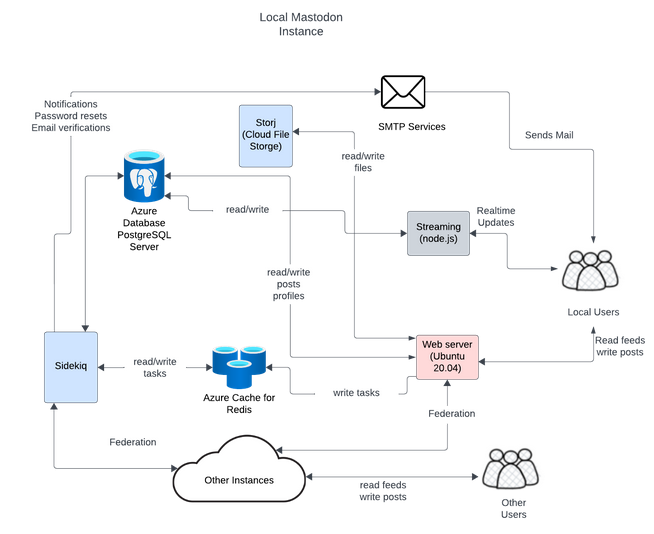
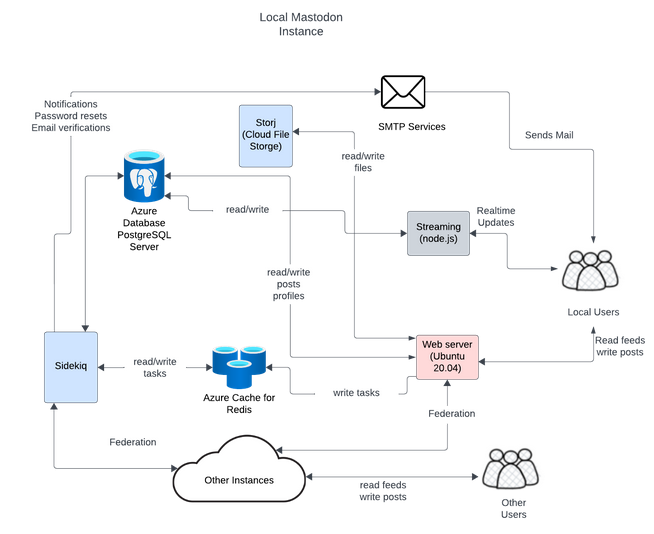
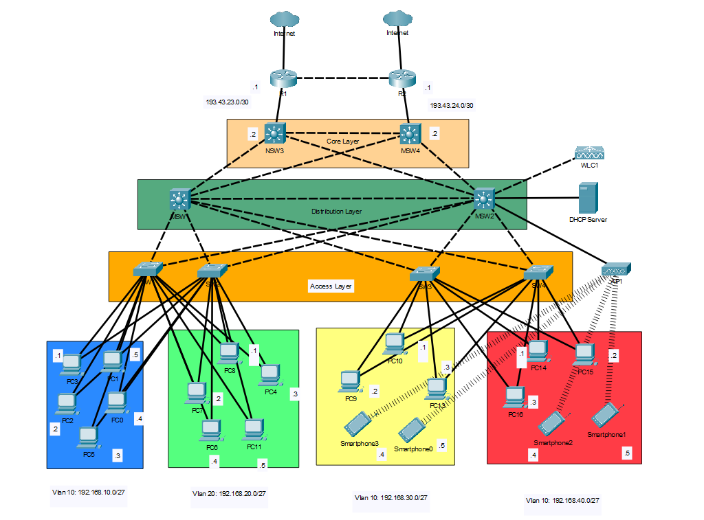

Projects
Mastodon Virtual Machine Instance
 

Directed a team of six to deploy and manage a Linux Mastodon instance on Microsoft Azure for Stanford, ensuring a secure and safe social media platform for over 50 students, while adhering to SDLC processes
Designed ERD and UML diagrams for virtual machine data modeling and architecture visualization, improving documentation clarity and system understanding by 15%
Integrated Storj as an S3-compatible storage provider and deployed PostgreSQL, enhancing scalability and database management efficiency by 60%
Conducted weekly sprints with stakeholders to review and align project goals with stakeholder expectations
Packet Tracer Network Design

Designed and implemented network topologies using Cisco Packet Tracer, configuring PCs, routers, and switches in a logical environment, resulting in an 80% improvement in network connectivity
Set up IPv4 addresses, subnet masks, default gateways, and VLANs for end hosts through DHCP servers and subnetting, ensuring organized network communication with a 40% reduction in IP conflicts
Executed end-to-end connectivity tests using ping and tracert between end users, verifying network stability and reliability
Active Directory Homelab
Deployed an Active Directory environment through Windows Server 2022 using virtual machines through VirtualBox, managing 20 user accounts over 3 groups to streamline access control and organizational structure
Implemented Group Policy Objects to automate security settings and software installations, reducing manual configuration errors by 50%
Set up a NAT network for isolated and secure communication between VMs, reducing external network exposure and ensuring a controlled testing environment
Drug Mortality Visualization
Prepared and cleaned data in Excel for spatial file integration in Tableau.
Developed an interactive color-coded map with filters by county and year to enhance data visualization and insights.
Sales Analytics Power BI
Utilized Power Query to clean and transform sales data, ensuring high data integrity and reliability for accurate analysis and reporting.
Leveraged Power Query to derive new calculated fields and integrated external data through the merging of normalized sources and Pivot Tables and VLookUps in Excel for EDA.
Constructed and implemented a Power BI dashboard for sports gear sales to visualize key performance metrics and trends of sales by country and product.
Profit Optimization


Performed comprehensive data cleaning on files through Excel and Python in Jupyter Notebooks, improving data quality by 20%.
Collaborated with a team to conduct an exploratory and in-depth data analysis of underperforming products and subcategories using Python and SQL to analyze profitability.
Developed data visualizations using Matplotlib to gain actionable insights.
AI for Social Good Pothole Detection

Collaborated with a team to design and implement ChatGPT Vision in Python Streamlit which allows users to upload images of potholes that get detected by Vision and plotted on a map.
Presented in front of industry experts emphasizing benefits for social good and practicality.
Store Sales Visualization Tableau

Conducted comprehensive analysis of gross income segmented by product line to identify high-performing and underperforming product categories.
Analyzed total revenue generated by male and female customers across different product lines, identifying key demographic trends and consumer preferences.
Examined average gross income by hour of day to pinpoint peak sales periods.
Etch A Sketch
Designed and implemented an interactive Etch A Sketch game using HTML, CSS, and JavaScript, providing an engaging user experience
Managed game state effectively, allowing users to reset the canvas, change drawing colors, and adjust line thickness in real-time.